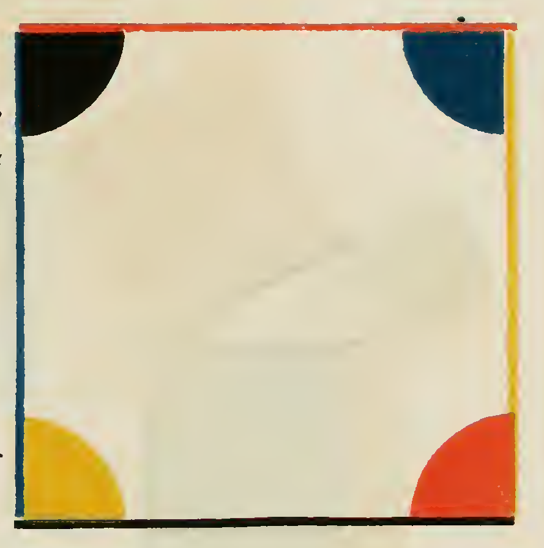

Proposition I.46 — Construction of the Square¶
Book I, Proposition XLVI. Problem (Pickering p. 47 · G.139)
Upon a given straight line () to construct a square.


Construction. Draw ⊥ and = ([I.11], [I.3]). Draw ∥ , meeting drawn ∥ ([I.31]).
Demonstration.
In parallelogram , = (const.), and opposite sides of a parallelogram are equal ([I.34]), so all four sides (, , , ) are equal.
Again, = (const.); since meets parallels and , + = ([I.29]),
∴ = = , and opposite angles and are likewise right ([I.34]).
∴ is a square (Simson Def. XXVII / [I.def.22]). Q.E.F.
See Commentary on Proposition I.46.